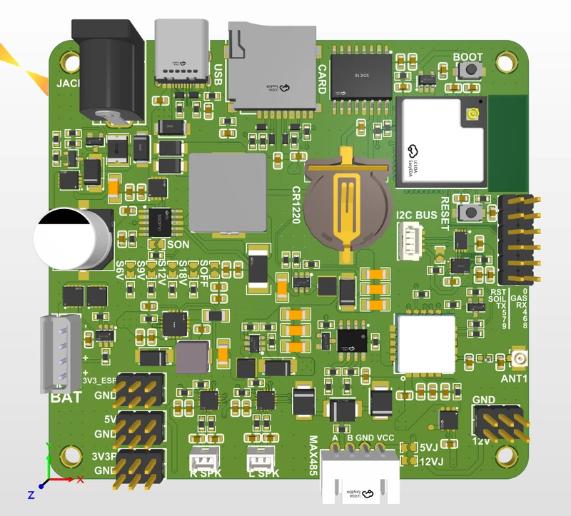
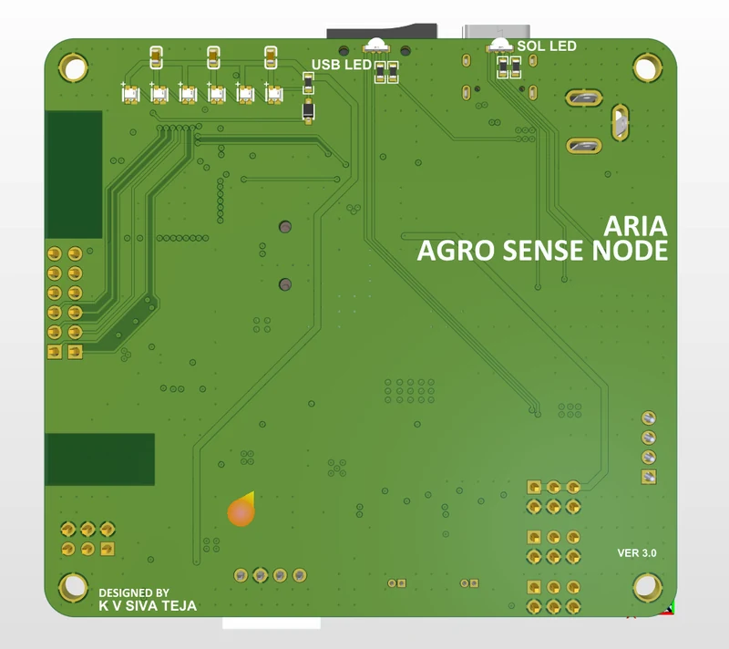
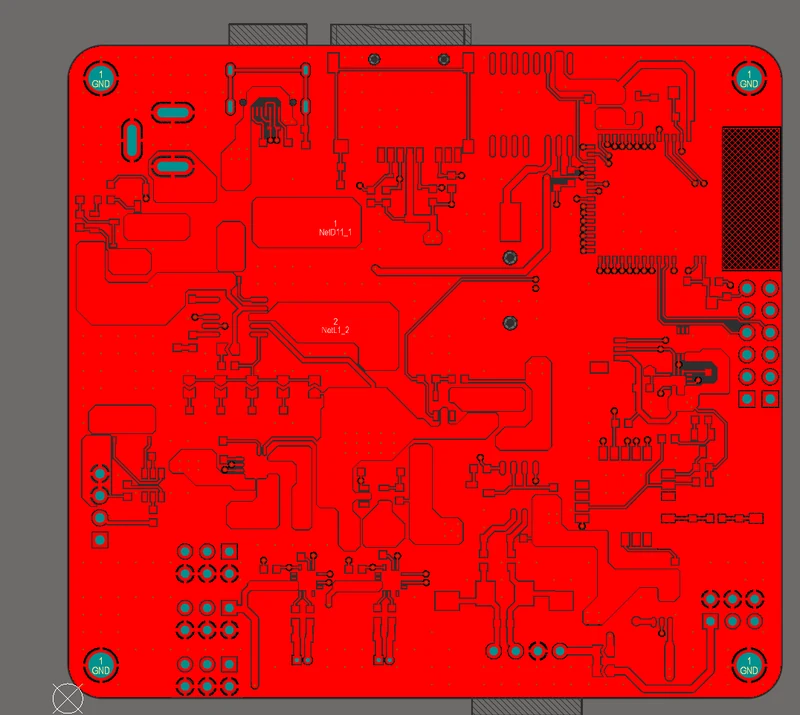
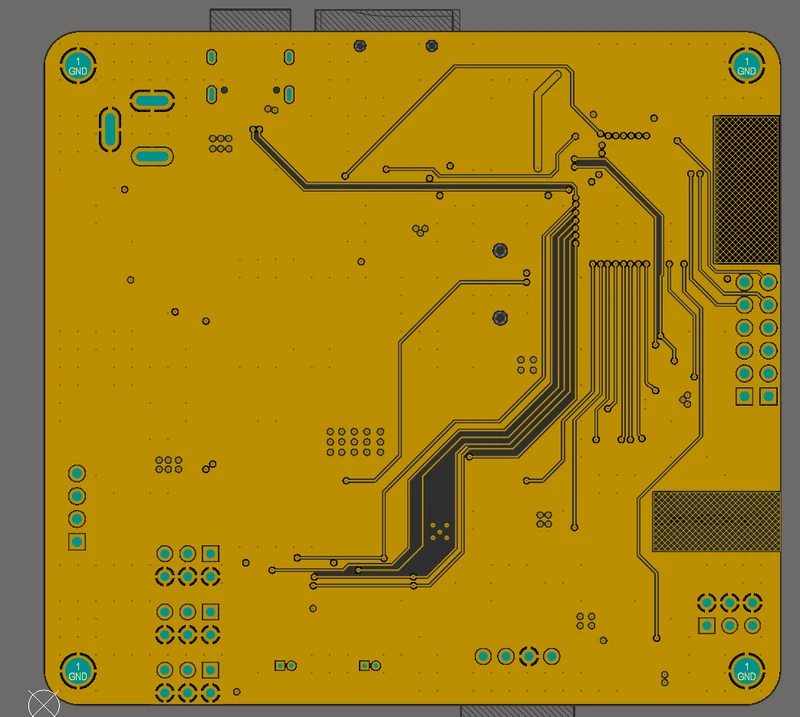
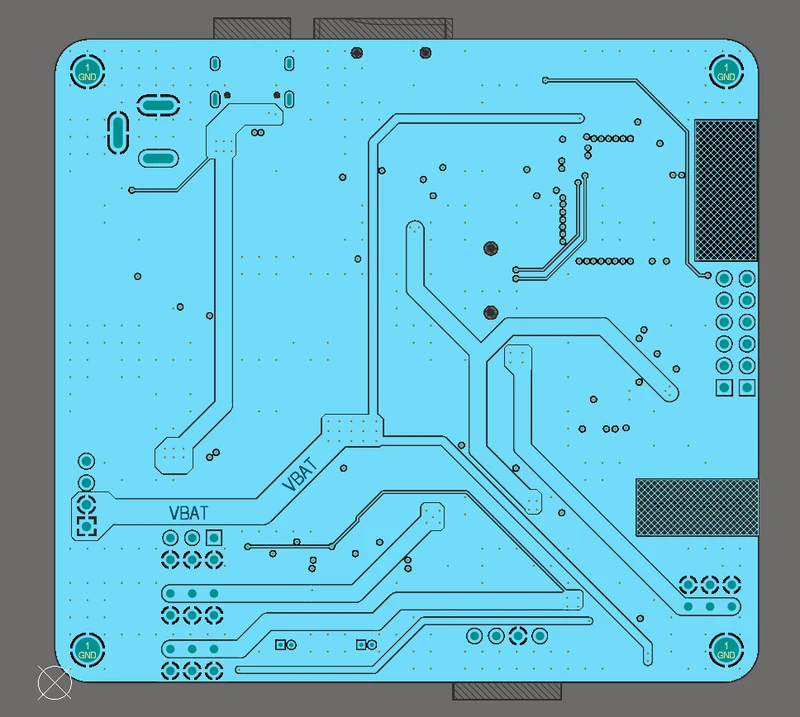
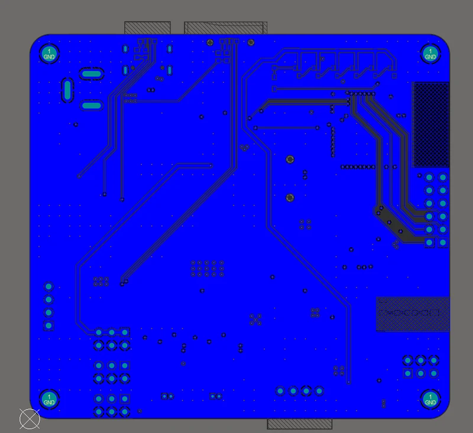

U1 · M.Tech capstone · Revision 3 of 3
AgroSense Node rev 3
The current AgroSense node: four copper layers, solar MPPT with a selectable panel input, a matched LoRa front end, and three independently switched supply rails.

Where it sits
The AgroSense node went through three revisions: rev 1 was a 2-layer prototype, rev 2 moved to four copper layers, and rev 3 is the one in the field. Each build folded in what the previous one's bring-up found rather than patching faults on the bench.
Rev 3 is a four-layer mixed-signal board and the hardware ARIA runs on.
What's on it
A LoRa radio with a matched RF feed and a U.FL launch, so the antenna can be chosen for the site without respinning the board. The antenna keepout and the stitched ground around the feed stay clear of the switching and digital regions — that continuous reference plane is the reason for going to four layers.
Power is solar MPPT charging with a jumper-selectable panel voltage, Li-ion charge and protection, and USB-C in. The 3.3 V, 5 V and 12 V rails are independently enabled, so idle sensors can be switched off between readings instead of sitting biased.
What rev 3 added
microSD logging, an IMU and I²S audio, RGB status indicators, a smaller board outline and broken-out I²C and GPIO headers for field expansion. Gerbers, BOM and netlists went out after a DRC and DFM review on each run.
The gallery below has all four copper layers and both 3D renders.
Gallery




